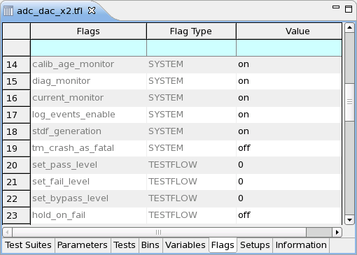

Flags page
On this page, you can set the system flags and testflow flags.

Note You can also access the system flags and testflow flags through the
Operation Control window (via Production Settings), when running SmarTest in engineering mode
(see Activating event data logging). To actually make changes to the flags, all windows must be set to
Testflow settings mode (not to Production settings mode) from the Operation
Control window.
Functional changes
- Introduced before SmarTest 6.3.2